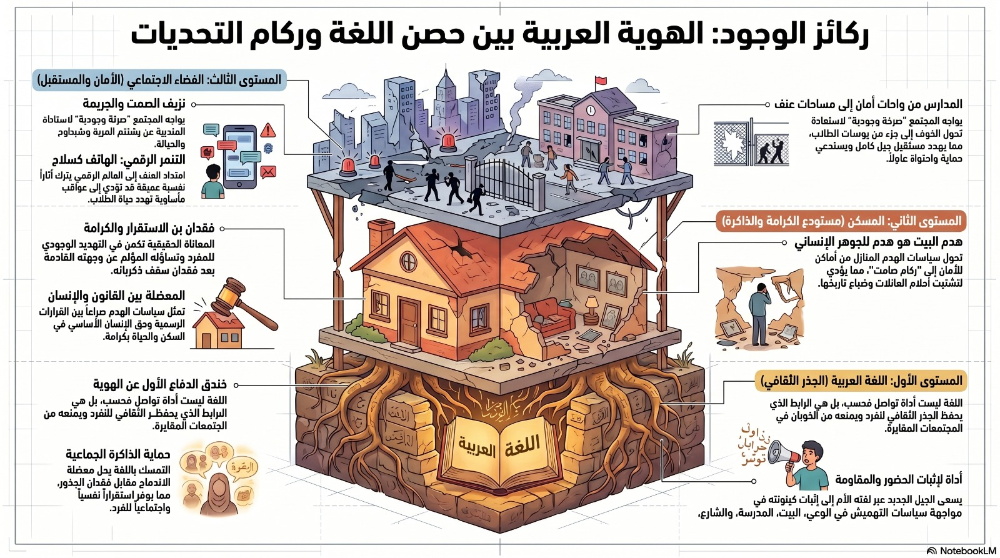

نحن طلاب صفوف العاشر نعمل من خلال موضوع المدنيات مهمه تطبيقيه نجسد من خلالها مشاكل انيه يعاني منها المجتمع العربي ونحن كطلاب من مشاركتنا الفعاله اخترنا مشكله هدم البيوت بحجه البناء الغير مرخص.
هدم المنازل في المجتمع العربي داخل إسرائيل قضية حسّاسة ترتبط بصعوبات التخطيط والحصول على تصاريح البناء، في ظل سياسات وتحديات معقّدة. ويؤدي ذلك إلى آثار قاسية على العائلات مثل فقدان البيت والاستقرار، مما يجعلها قضية اجتماعية وإنسانية بامتياز.
خلال السنوات الثلاث الأخيرة، تكشف المعطيات عن واقع مقلق في منطقة وادي عارة، حيث تم إصدار 253 أمر هدم لمنازل ومنشآت، بحسب موقع عرب 48. ويُظهر توزيع هذه الأوامر حجم الأزمة بشكل واضح: في أم الفحم سُجّل العدد الأعلى بـ119 أمر هدم، تليها عارة وعرعرة بـ65 أمرًا، ثم كفر قرع بـ39، وأخيرًا طلعة عارة ب30 أمر هدم.
هذه الأرقام لا تعبّر فقط عن إحصائيات، بل تعكس أزمة تخطيط وسكن عميقة تؤثر بشكل مباشر على استقرار العائلات وأمنها الاجتماعي. فكل أمر هدم يعني بيتًا مهددًا، وأسرة تعيش حالة من القلق وعدم اليقين، ما يسلّط الضوء على الحاجة الملحّة لإيجاد حلول عادلة وشاملة تضمن حق السكن الكريم وتخفّف من حدّة هذه الظاهرة في المجتمع العربي.
